Cards de aula do MBO Pós
Card de divulgação de cada aula da pós: data, horário, professor, tema e turmas. Um layout fixo que se repete a cada aula, trocando só foto e informações, para a série ficar reconhecível no feed.
Faixa 01 · Cliente · Hiperideal
Para o Hiperideal, rede de supermercados, criei posts de ofertas, banners para o site e o app e peças impressas para loja. Trabalho de volume e prazo curto, sempre dentro da identidade verde da marca, com preço legível, regras da oferta no rodapé e cada campanha com cara própria.
Banner para site e app com elementos de interface (janela, cursor, selo pixelado) que reforçam que a oferta vale só no digital.
Cartaz para a padaria das lojas, fechado em CMYK para gráfica. Tipografia serifada e trigo em aquarela para passar a ideia de pão feito na casa.
Crachá de "mini cliente" para as crianças, com carinha sorridente de coroa, nuvens e os tons de verde da marca. O cordão repete o logo, o slogan "eu idealizo e realizo" e ícones de hortifrúti.
Fichas para apresentar os rótulos num evento de vinhos. O nome da uva em letras grandes, ficha técnica, harmonização com ícones e QR code para as ofertas online. A linha que passa por trás da garrafa e o fundo creme mantêm o verde da marca sem cara de encarte.
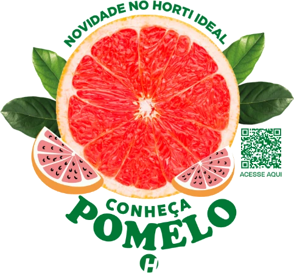
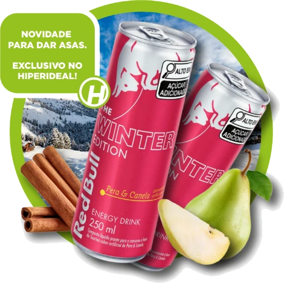
Peças recortadas que ficam presas na prateleira por uma haste flexível e balançam quando alguém passa. "Conheça Pomelo" apresenta a fruta no Horti Ideal com QR code; o da Red Bull Winter Edition anuncia o sabor exclusivo da rede.
Posts 1:1 para Instagram e Facebook. Toque em uma peça para ampliar.
Faixa 02 · Cliente · Eloquence
Para a Eloquence, escola de oratória de Yang Mendes, edito os vídeos e crio as postagens do perfil dele, além do design da escola: posts, carrosséis, impressos e materiais de aula.
Yang fala sobre comunicação, presença e liderança a partir de assuntos do momento: futebol, política, entrevistas e reality shows. Há mais de um ano faço os cortes, as legendas e as capas com título em destaque que deixam o feed reconhecível.
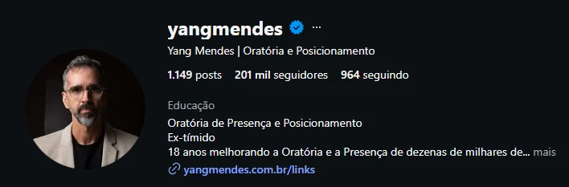
Perfil hoje · 201 mil seguidoresRecortes do feed. Toque para ampliar.
Vídeos do perfil
Anatomia da liderança · Instagram · 9 lâminas
Carrossel sobre presença e autoridade a partir de cenas do BBB. As lâminas foram pensadas como uma faixa contínua: a foto, os círculos e as formas cortam a borda de uma lâmina e continuam na próxima, o que puxa o dedo para arrastar.
Role para o lado para ver a sequência. Toque em uma lâmina para ampliar.
Plano de identidade visual · aula da Eloquence
Identidade criada para a aula sobre memória: logo, paleta, tipografia e o sistema aplicado em 12 slides. Preto de fundo, vinho da Eloquence como cor de destaque e imagens em preto e branco com textura de gravura.
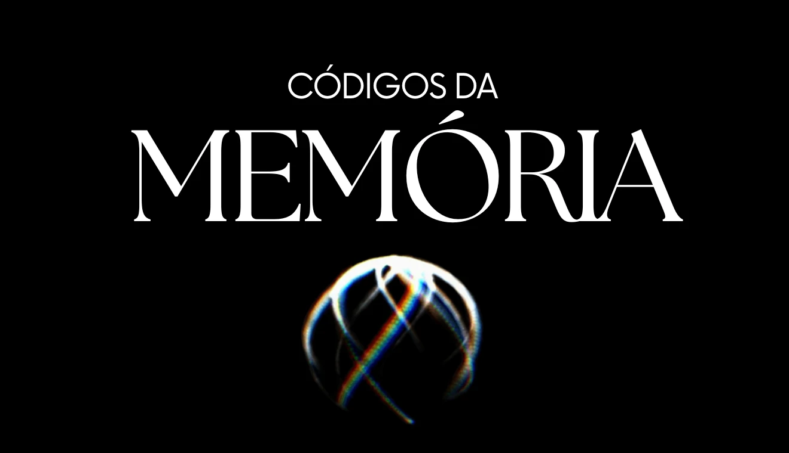
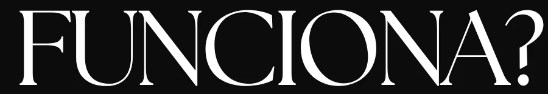
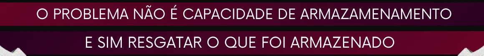
Cores
#7B0425Faixas, destaques e degradê#370122Fim do degradê e sombras#0C0C0CFundo dos slides#FFFFFFTítulos e texto#B6B6B6Texturas e imagens em P&BMarca comemorativa e capas para celebrar as 500 turmas da Eloquence. O número em serifa alta e estreita, com uma órbita e uma estrela, funciona sozinho ou sobre foto de palco.
Card de divulgação de cada aula da pós: data, horário, professor, tema e turmas. Um layout fixo que se repete a cada aula, trocando só foto e informações, para a série ficar reconhecível no feed.
Flyers para divulgação da escola e da unidade no Mundo Plaza. Mesmo sistema nos três: vinho da marca, título condensado em caixa alta, faixas com os contatos e QR code.
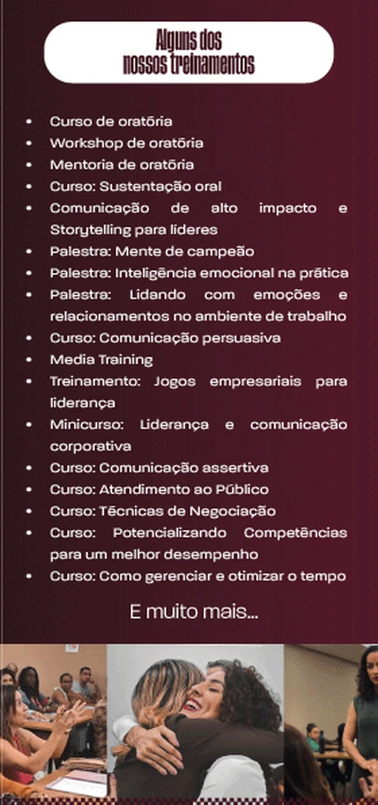
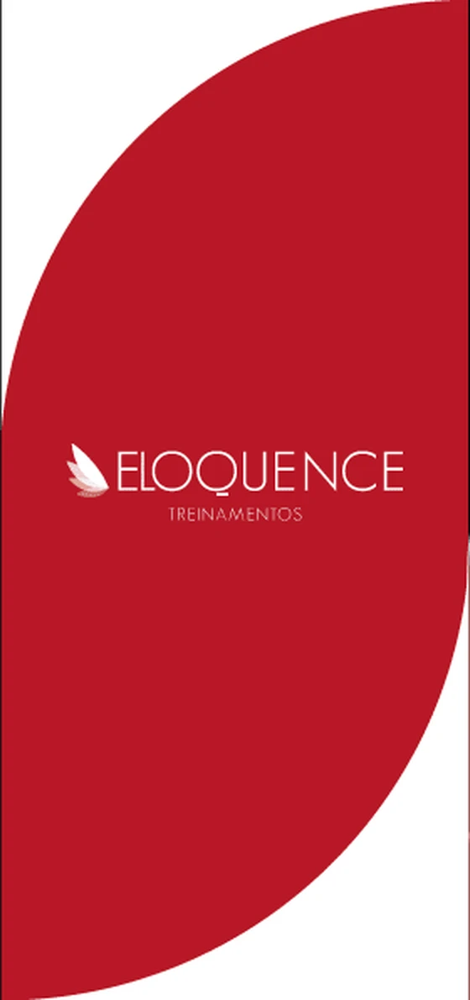
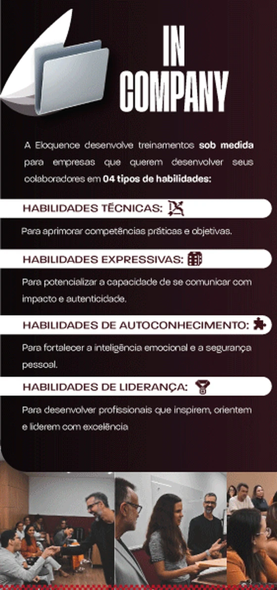
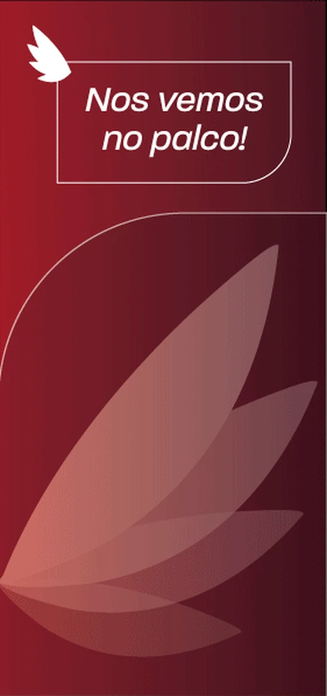
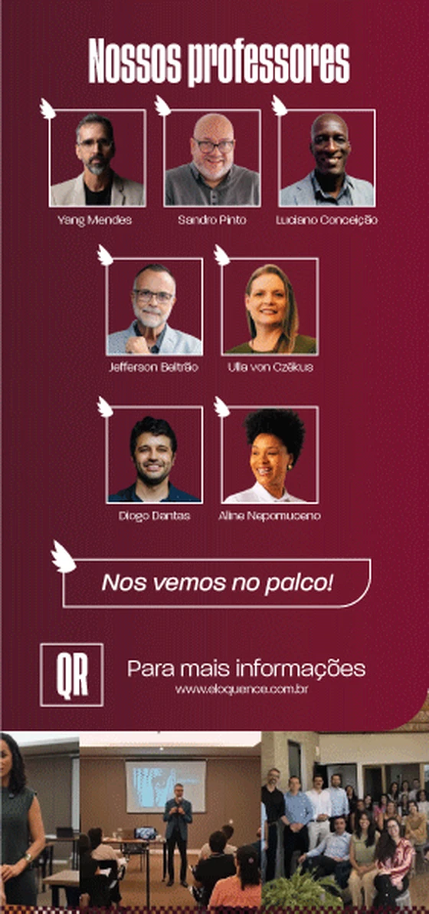
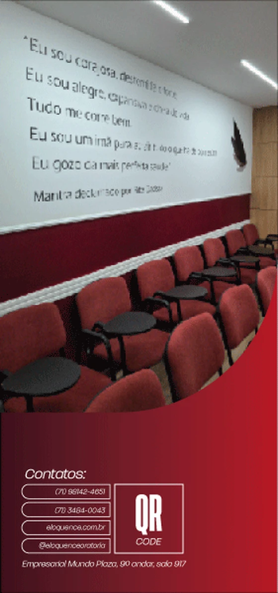
Folder institucional para empresas. Fechado, mostra a capa. Na primeira abertura aparece o In Company ao lado da aba com os contatos; aberto por inteiro, os treinamentos e os professores, com a faixa de fotos atravessando as três partes.
Material impresso entregue aos alunos, com 50 páginas. Diagramei capa, sumário, aberturas de capítulo e páginas de texto no mesmo sistema: vinho da marca, títulos grandes com imagem recortada e rodapé numerado. Aqui estão as 10 primeiras páginas, até a abertura de "Física da Oratória".
Faixa 03 · Outros clientes
Profissionais que usam o próprio perfil para mostrar o seu trabalho: vídeos para redes sociais, capas, cards de serviço e apresentações.
Edito vídeos para profissionais que usam o próprio perfil para vender o seu trabalho, como Millene e Natália. Cortes dinâmicos, legendas dentro da área segura do 9:16, inserção de notícias e imagens de apoio, e gancho nos primeiros 3 segundos. Também tenho um contrato recorrente de 50 vídeos por mês.
Redesign de mais de seis módulos de aula. Na capa, a foto da professora sobre um fundo de hemácias, faixa dourada e título com entrada animada.
Capa animada do curso, com a foto da Silvana à frente e uma janela que troca entre cenas dela na TV e gravando na rua. O cursor e os ícones das redes reforçam o tema do vídeo para internet.
Projetos visuais para Bruno Freitas · @brunofreitas_tm
Bruno é psicoterapeuta, mentor e palestrante. Criei as peças que apresentam o trabalho dele nas redes: capas, cards de serviço e estudos de cor. Também fiz a análise do perfil no Instagram e um guia de produção de vídeo.
Capa para o post de apresentação, com foto natural e título em serifa sobre um degradê escuro.
Retícula, luz quente e título vazado sobre a foto do tabuleiro.
Duas versões da mesma capa, em laranja e em azul, para o cliente escolher. As linhas-guia mostram a construção: o círculo centraliza o rosto e as margens alinham o título.
A sigla em letras gigantes alterna preenchimento e contorno para a foto aparecer por dentro do título.
Seis cards no mesmo sistema visual: foto recortada saindo do card, título em serifa e borda dourada. Funcionam juntos numa página de links ou separados nos destaques.
Faixa 04 · Sobre
Sou designer gráfico e editor de vídeo e atendo como freelancer. Já criei campanhas de ofertas para o Hiperideal, em redes sociais, site, app e lojas.
Há mais de um ano produzo os vídeos do perfil @yangmendes e o design da Eloquence, escola de oratória: posts, carrosséis, flyers, apresentações de aula e cards.
Atendo profissionais e marcas em edição de vídeo para redes sociais, posts, impressos, identidade visual e apresentações.
Ferramentas
Fim da timeline
lucascerqueirapro@gmail.com(71) 99127-2961@luckadms